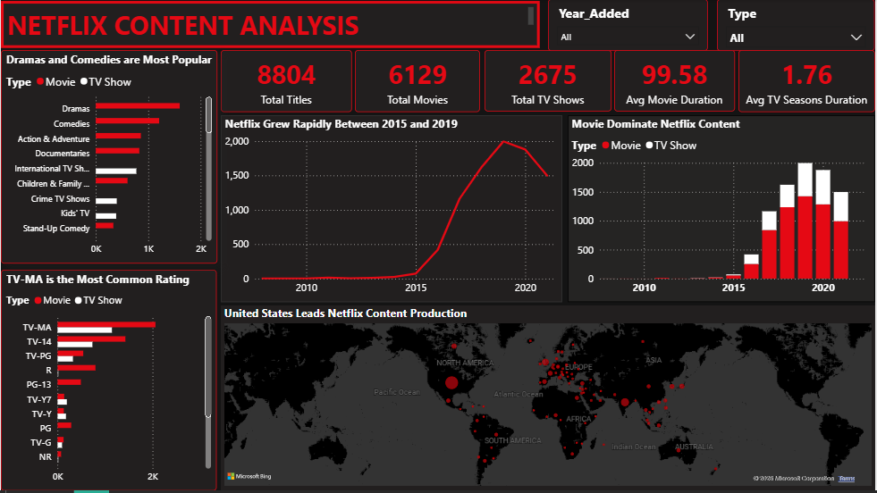

SQL · Power BI
Netflix Content Analysis
Cleaned and standardized an ~8,800-row Netflix titles dataset in SQL — resolving duplicate records, filling in missing director/cast/country/rating values, and parsing duration into structured numeric fields.
- Wrote SQL queries to answer content-growth, top-country, and genre-popularity questions
- Built a Power BI dashboard covering totals, ratings, genres, and a world map of content origin